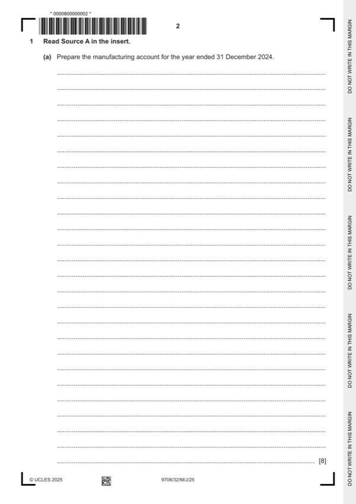

Question 1

Original paper page 2
Part 1(a) — solution
Answer: 341 800 · 370 200
- W1 $33 350 + $9 200 75% = $40 250
- W2 2023 rate of factory profit $9 600/($48 000 – $9 600) = 25% 25% + 5% = 30%
Mark points
- W1 $33 350 + $9 200 75% = $40 250
- W2 2023 rate of factory profit $9 600/($48 000 – $9 600) = 25% 25% + 5% = 30%
Part 1(b) — solution
Answer: 341 750
Prepare the statement of profit or loss for the year ended 31 December 2024. 7
Statement of profit or loss for the year ended 31 December 2024
$ $
Sales revenue 724 000
Opening finished goods inventory 48 000
Purchases 28 000
Carriage inwards $8500 10% 850 (1)
Transfer price of manufactured goods 455 000
Closing finished goods inventory (45 500) (1)OF
Cost of sales 486 350
Gross profit 237 650
Factory profit 105 000 (1)OF
Increase in provision for unrealised profit ($10 500 – $9 600) (900) (1)OF 104 100
341 750
Carriage outwards 9 440
Office expenses ($174 800 – $9 200 75%) 167 900 (1)
Depreciation – office equipment 6 300 (1) 183 640
Profit for the year 158 110 (1)OF
Mark points
- Correct result: 341 750
Part 1(c)(i) — solution
Explain why unrealised profit occurs in some manufacturing businesses. 2
The value of goods manufactured transferred to the statement of profit or loss includes both the manufacturing cost and the
factory profit / is based on a comparison of prices with external suppliers. (1)
Value of goods unsold at the year-end includes the factory profit element that has not been realised (1)
Accept other valid responses.
Max 2
University Press & Assessment 2025 Page 10 of 17
9706/32 Cambridge International AS & A Level – Mark Scheme May/June 2025
Mark points
- Include the ideas shown in the solution above.
Part 1(c)(ii) — solution
- According to IAS2 / inventory should be stated at lower of cost and net realisable value. (1)
Mark points
- According to IAS2 / inventory should be stated at lower of cost and net realisable value. (1)
Part 1(d) — solution
Advise Nadim whether or not he should incorporate his business in view of his only concern. Justify your answer. 5
For (Max 2)
The financial statements are more credible (1) if the audit report is with a true and fair view opinion. (1)
It is easier to raise finance, for example, obtaining a bank loan or issuing shares (1)
Fraud and errors are easier to be detected and prevented by auditor (1)
Against (Max 2)
Audit fee is costly (1)
Need to employ professional accountant to fulfil compliance (1)
Audit may not be necessary as Nadim’s business is still small. (1)
Decision supported with a comment (1)
Accept other valid responses.
Mark points
- Include the ideas shown in the solution above.